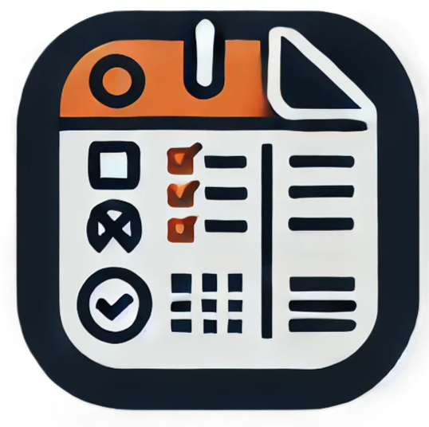
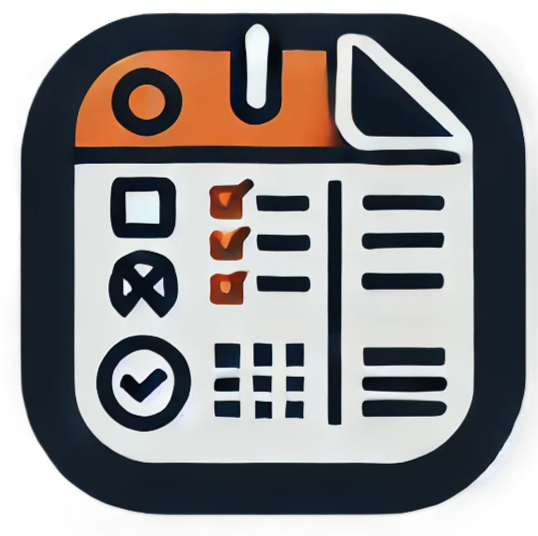

Warhammer Fantasy Roleplay Application.
The aim of this project is to create an application that can support players in Warhammer Fantasy Roleplay game. The program will allow users to save their characters, equipment and statistics. It will also have a module for creating a new character. Future improvements may provide a system for battles simulations.
Self paced project, work in progress.
See the source code and documentation:

 
